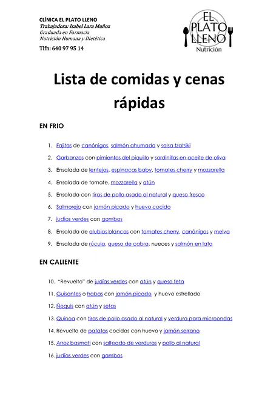
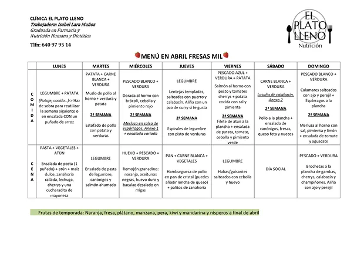
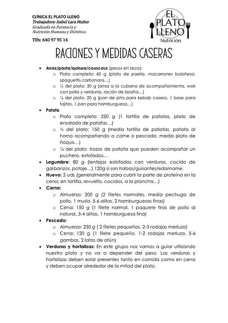

Nutrición oncológica en cada fase
Antes, durante y después del tratamiento contra el cáncer. Pautas prácticas para comer cuando cuesta, cuidar tu estado nutricional y resolver las dudas que surgen, para ti y para quien cocina en casa.

Este servicio es para ti si…
- Estás en tratamiento y has perdido el apetito o peso sin querer.
- Tienes náuseas, boca seca o cambios en el gusto y no sabes qué comer.
- Quien cocina en casa quiere saber qué preparar para ayudarte.
- Lees cosas contradictorias sobre el azúcar, los lácteos o la soja y ya no sabes a quién creer.
- Has terminado el tratamiento y quieres recuperar fuerza y buenos hábitos.
Cómo funciona
- Primera consulta · 1 hora
Escucharte con calma
Vemos en qué momento del tratamiento estás, tus síntomas, tu apetito, los cambios de peso, la medicación y los suplementos. Como farmacéutica, tengo en cuenta cómo se relacionan con lo que comes.
- En 3 días como máximo
Tus pautas
Recibes pautas personalizadas y un menú adaptado a cómo te encuentras, con ideas de comidas fáciles para los días más duros.
- Seguimientos flexibles
Adaptarnos a cada fase
Ajustamos la frecuencia a tus ciclos y las pautas a lo que vaya apareciendo: náuseas, falta de apetito, cambios de gusto o cansancio. Los días de tratamiento, la consulta online es muy cómoda.
- Después del tratamiento
Recuperar
Te acompaño a recuperar la fuerza, la variedad y unos hábitos que te cuiden a largo plazo, sin prisas.
Tráeme tus informes: tendré en cuenta tu medicación y las indicaciones de tu equipo médico, que siempre van primero.
Lo que te llevas a casa
Todo el material es propio y lo recibes en PDF para tenerlo siempre a mano. Estas son algunas muestras.



Cuánto cuesta
Pago por adelantado. Te explico cómo al reservar.
- Primera consulta
- 55 €
- Seguimiento
- 45 €
- Bono inicio · 1.ª + 3 seguimientos
- 180 €